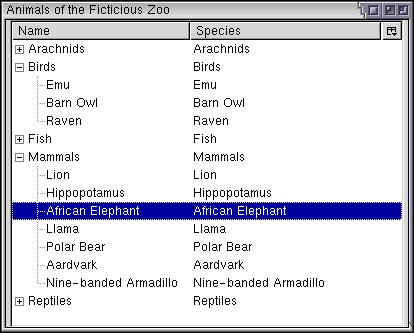

RDF Datasources
Here, we'll look at additional datasources and how to use your own RDF files as datasources.
Other Mozilla Datasources
Mozilla provides a number of other built-in datasources. Some of them are listed here with a few examples. They work very similarly to the bookmarks, although the fields will be different in each case.
The History List
The history datasource provides access to the user's history list which is the list of URLs the user has visited recently. The resource can be referred to using rdf:history as the datasource. The table below shows the resources (or fields) that you can retrieve from the history datasource. Put the URL values below where you want the value of the resource to be used.
| Date | rdf:http://home.netscape.com/NC-rdf#Date | Date of last visit |
| Name | rdf:http://home.netscape.com/NC-rdf#Name | Title of the page |
| Page | rdf:http://home.netscape.com/NC-rdf#Page | Page name |
| Referrer | rdf:http://home.netscape.com/NC-rdf#Referrer | Referrer of the page |
| URL | rdf:http://home.netscape.com/NC-rdf#URL | URL of the page |
| Visit Count | rdf:http://home.netscape.com/NC-rdf#VisitCount | Number of page visits |
A typical history list will display a tree with a selection of these fields. To use them, just put the URL values above in the label attributes of the buttons or treecells. You can use NC:HistoryRoot as the value of the ref attribute. You can also use the value NC:HistoryByDate to get the history sorted into days.
Let's see an example of displaying the history list. We'll display the history in a tree with three columns, the Name, the Page and the Date.
Example 9.4.1: Source<tree flex="1" datasources="rdf:history" ref="NC:HistoryRoot">
<treecols>
<treecol id="name" label="Name" flex="1"/>
<treecol id="url" label="URL" flex="1"/>
<treecol id="date" label="Date" flex="1"/>
</treecols>
<template>
<rule>
<treechildren flex="1">
<treeitem uri="rdf:*">
<treerow>
<treecell label="rdf:http://home.netscape.com/NC-rdf#Name"/>
<treecell label="rdf:http://home.netscape.com/NC-rdf#URL"/>
<treecell label="rdf:http://home.netscape.com/NC-rdf#Date"/>
</treerow>
</treeitem>
</treechildren>
</rule>
</template>
</tree>Other Datasources
The tables below list some of the other datasources available with Mozilla. You can use any of the resources that you want.
Bookmarks (rdf:bookmarks): The bookmarks are generated from the user's bookmark list.
| Resources | ||
| Added Date | rdf:http://home.netscape.com/NC-rdf#BookmarkAddDate | Date the bookmark was added |
| Description | rdf:http://home.netscape.com/NC-rdf#Description | Bookmark description |
| Last Modified | rdf:http://home.netscape.com/WEB-rdf#LastModifiedDate | Date of last modification |
| Last Visited | rdf:http://home.netscape.com/WEB-rdf#LastVisitDate | Date of last visit |
| Name | rdf:http://home.netscape.com/NC-rdf#Name | Bookmark name |
| Shortcut URL | rdf:http://home.netscape.com/NC-rdf#ShortcutURL | Custom keywords field |
| URL | rdf:http://home.netscape.com/NC-rdf#URL | The URL to link to |
| Possible Bookmarks Roots | |
| NC:BookmarksRoot | The top level of the bookmarks hierarchy |
| NC:IEFavoritesRoot | The bookmark folder that corresponds to the user's IE favorites. |
| NC:PersonalToolbarFolder | The bookmark folder that corresponds to the personal toolbar folder |
Files (rdf:files): A view of the user's files.
| Resources | ||
| Name | rdf:http://home.netscape.com/NC-rdf#Name | Name of the file |
| URL | rdf:http://home.netscape.com/NC-rdf#URL | URL of the file |
| Possible Files Roots | |
| NC:FilesRoot | Top level of the filesystem (usually the list of drives) |
| A file URL | By using a file URL for the ref attribute, you can select a specific directory to be returned. For example, you might use file:///windows or files:///usr/local. |
The files datasource is an example of a datasource that determines its resources only when necessary. We don't want every file in the filesystem to be determined before the data is displayed. Instead, only the files and directories that the tree element (or other elements) will need to display at a given time will be determined.
Composite Datasources
You can specify multiple datasources in the datasources attribute by separating them with whitespace as in the example below. This has the effect of reading the data from all the datasources mentioned.
<tree datasources="rdf:bookmarks rdf:history animals.rdf" ref="NC:BookmarksRoot">
This example reads the resources from the bookmarks, history and the animals.rdf file. They are combined into a single composite datasource and can be used as if they were one.
The special datasource rdf:null corresponds to nothing. You can use this datasource if you want to dynamically set the datasource using a script, but don't want one initially or don't know its exact URL.
Custom RDF Datasources
You can use any of the above internal datasources if you wish. There are several others for mail, address books and searching and so on. However, you might want to use your own RDF datasource stored in an RDF file. The file can be either a local file or a remote file. Just put the URL of the RDF file in the datasources attribute.
Using RDF files provides just as much functionality as any of the internal datasources. You can use rules to match specific types of content. The attributes on the rule element will match if they match the attributes on an RDF Description element. You can also create RDF files that are hierarchical.
The following is an example of how an RDF file can be used as a datasource. The RDF file is fairly large and can be viewed separately: Source RDF
Example 9.4.2: Source View<tree flex="1" width="200" height="200"
datasources="animals.rdf" ref="http://www.some-fictitious-zoo.com/all-animals">
<treecols>
<treecol id="name" label="Name" primary="true" flex="1"/>
<treecol id="species" label="Species" flex="1"/>
</treecols>
<template>
<rule>
<treechildren>
<treeitem uri="rdf:*">
<treerow>
<treecell label="rdf:http://www.some-fictitious-zoo.com/rdf#name"/>
<treecell label="rdf:http://www.some-fictitious-zoo.com/rdf#species"/>
</treerow>
</treeitem>
</treechildren>
</rule>
</template>
</tree>
Here, the data has been generated from the file. The ref attribute has been set to the root element in the RDF file, which is the top-level Seq. This will give us a complete list of animals. If we wanted to, we could set the ref attribute to any of the other about attribute values to limit the set of data that is returned. For example, to display only the reptiles, use a value of http://www.some-fictitious-zoo.com/reptiles.
The example below shows how to display a particular piece of an RDF datasource by setting the ref attribute.
Example 9.4.3: Source View<window
id="example-window"
title="History List"
xmlns:ANIMALS="http://www.some-fictitious-zoo.com/rdf#"
xmlns="http://www.mozilla.org/keymaster/gatekeeper/there.is.only.xul">
<button label="Click here to see the mammals the zoo has" type="menu"
datasources="animals.rdf" ref="http://www.some-fictitious-zoo.com/mammals">
<template>
<rule ANIMALS:specimens="0"></rule>
<rule>
<menupopup>
<menuitem uri="rdf:*" label="rdf:http://www.some-fictitious-zoo.com/rdf#name"/>
</menupopup>
</rule>
</template>
</button>
</window>In this case only the mammals are desired, so we select the URI of the mammals list. You will notice that the value of the ref attribute in the example is http://www.some-fictitious-zoo.com/mammals which corresponds to one of the Seq elements in the RDF file. This causes only the descendants of this list to be returned.
Two rules have been used here. The first rule catches all the resources that have their ANIMALS:specimens attribute set to 0. You can see this attribute in the RDF file on each of the Description elements. Some of them have a value of 0. So in these cases, rule one will match. Because rule one has no content, nothing will be displayed for these ones. This is an effective way to hide data that we don't want to display.
The second rule applies to all other resources and creates a row in a popup menu. The end effect is that we get a popup menu containing all the mammals which have a specimen that is not 0.
(Next) Next, we'll look at the full rule syntax.